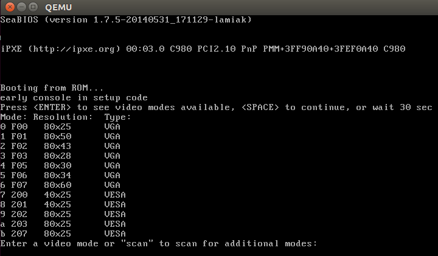

显示模式
Table of Contents
前面内核启动过程之旅停在了对 set_video 函数的调用（ main.c）。接下来将读到下面的内容：
- 显示模式的初始化
- 在进入保护模式之前的准备工作
- 正式进入保护模式
显示模式
可以在 arch/x86/boot/video.c 找到这个函数的定义。 这个函数首先从 boot_params.hdr 结构 获取 显示模式设置 ：
u16 mode = boot_params.hdr.vid_mode;
至于 boot_params.hdr 数据结构中的内容，是通过 copy_boot_params 函数实现的 关于这个函数的实现细节请查看上一节的内容
boot_params.hdr 中的 vid_mode 是 引导程序 必须填入的字段。可以在 kernel boot protocol 文档中找到关于 vid_mode 的详细信息：
Offset Proto Name Meaning /Size 01FA/2 ALL vid_mode Video mode control
而在 linux kernel boot protocol 文档中定义了如何通过命令行参数的方式为 vid_mode 字段传入相应的值：
**** SPECIAL COMMAND LINE OPTIONS vga=<mode> <mode> here is either an integer (in C notation, either decimal, octal, or hexadecimal) or one of the strings "normal" (meaning 0xFFFF), "ext" (meaning 0xFFFE) or "ask" (meaning 0xFFFD). This value should be entered into the vid_mode field, as it is used by the kernel before the command line is parsed.
根据上面的描述，可以通过将 vga 选项写入 grub 或者写到引导程序的配置文件，从而让内核命令行得到相应的显示模式设置信息：
这个选项可以接受不同类型的值来表示相同的意思 比如可以传入 0XFFFD 或者 ask，这2个值都表示需要显示一个菜单让用户选择想要的显示模式

通过这个菜单，用户可以选择想要进入的显示模式
不过进一步了解显示模式的设置过程之前，先回头了解一些重要的概念
内核数据类型
在前面已经接触到了一个类似于 u16 的内核数据类型。下面列出了更多内核支持的数据类型：
| Type | char | short | int | long | u8 | u16 | u32 | u64 |
| Size | 1 | 2 | 4 | 8 | 1 | 2 | 4 | 8 |
如果尝试阅读内核代码，最好能够牢记这些数据类型
堆操作 API
在 set_video 函数将 vid_mod 的值设置完成之后，将调用 RESET_HEAP 宏 将 HEAP 头 指向 _end 符号。RESET_HEAP 宏定义在 boot.h：
#define RESET_HEAP() ((void *)( HEAP = _end ))
在上一节中，已经通过 init_heap 函数完成了 HEAP 的初始化， 而 _end 标号，在 boot.h 中通过 extern char _end[]; 来引用 从这里可以看出，在内核初始化的时候堆和栈是共享内存空间的
下面一个是 GET_HEAP 宏 ：
#define GET_HEAP(type, n) \ ((type *)__get_heap(sizeof(type),__alignof__(type),(n)))
这个宏调用了 __get_heap 函数 来进行 内存的分配 。__get_heap 需要下面3个参数来进行内存分配操作：
- 某个数据类型所占用的字节数
__alignof__(type) : 返回对于请求的数据类型需要怎样的对齐方式
根据我的了解这个是 gcc 提供的一个功能
- n : 需要分配多少个对应数据类型的对象
下面是 __get_heap 函数的实现：
/** * 分配heap内存 * * @param s 某个数据类型所占用的字节数 * @param a 对于请求的数据类型需要怎样的对齐方式 * @param n 需要分配多少个对应数据类型的对象 * * @return 返回HEAP指针 */ static inline char *__get_heap(size_t s, size_t a, size_t n) { char *tmp; HEAP = (char *)(((size_t)HEAP+(a-1)) & ~(a-1)); // 根据对齐方式要求（参数 a ）调整 HEAP 的值 tmp = HEAP; // 将 HEAP 值赋值给一个临时变量 tmp HEAP += s*n; // 根据需要分配的对象的个数（参数 n ），预留出所需要的内存 return tmp; // 将 tmp 返回给调用端 }
最后一个关于 HEAP 的操作是：
/** * 判断heap是否有足够的内存 * * @param n 内存数量 * * @return 足够内存返回真，否则返回假 */ static inline bool heap_free(size_t n) { // 简单做了一个减法 heap_end - HEAP // 如果相减的结果大于请求的内存，那么就返回真，否则返回假 return (int)(heap_end - HEAP) >= (int)n; }
下面继续显示模式设置过程
设置显示模式
stroe_mode_params
在 RESET_HEAP() 函数被调用之后，set_video 函数接着调用 store_mode_params 函数将对应显示模式的相关参数写入 boot_params.screen_info 字段。这个字段的结构定义可以在 include/uapi/linux/screen_info.h 中找到
store_mode_params 函数将调用 store_cursor_position 函数将 当前屏幕上光标的位置 保存 起来：
- 函数初始化一个类型为 biosregs 的变量，将其中的 AH 寄存器 内容设置成 0x3
- 调用 0x10 BIOS 中断
- 当中断调用返回之后， DL 和 DH 寄存器分别包含了 当前光标 的 行和列信息
- 这2个信息将被保存到 boot_params.screen_info 字段的 orig_x 和 orig_y 字段
在 store_cursor_position 函数执行完毕之后，store_mode_params 函数将调用 store_video_mode 函数将当前使用的 显示模式 保存 到 boot_params.screen_info.orig_video_mode
然后 store_mode_params 函数将根据当前显示模式的设定，给 video_segment 变量 设置正确的值
实际上就是设置显示内存的起始地址
在 BIOS 将控制权转移到引导扇区的时候，显示内存地址和显示模式的对应关系如下表所示：
0xB000:0x0000 32 Kb Monochrome Text Video Memory 0xB800:0x0000 32 Kb Color Text Video Memory 如果当前显示模式是 MDA, HGC 或者单色 VGA 模式，那么 video_sgement 的值将被设置成 0xB000 如果当前显示模式是彩色模式，那么 video_segment 的值将被设置成 0xB800
在这之后，store_mode_params 函数将保存 字体大小 信息到 boot_params.screen_info.orig_video_points ：
//保存字体大小信息 set_fs(0); font_size = rdfs16(0x485); boot_params.screen_info.orig_video_points = font_size;
这段代码首先调用 set_fs 函数（在 boot.h 中定义了许多类似的函数进行寄存器操作）将数字 0 放入 FS 寄存器 。接着从 内存地址 0x485 处 获取 字体大小 信息并保存到 boot_params.screen_info.orig_video_points
x = rdfs16(0x44a); y = (adapter == ADAPTER_CGA) ? 25 : rdfs8(0x484)+1;
接下来代码将从 地址 0x44a 处 获得 屏幕列 信息，从 地址 0x484 处 获得 屏幕行信息 ，并将它们保存到 boot_params.screen_info.orig_video_cols 和 boot_params.screen_info.orig_video_lines
到这里，store_mode_params 的执行就结束了
save_screen
接下来，set_video 函数将调用 save_screen 函数将 当前屏幕上的所有信息 保存 到 HEAP 中。这个函数首先获得当前屏幕的所有信息（包括屏幕大小，当前光标位置，屏幕上的字符信息），并且保存到 saved_screen 结构体中。这个结构体的定义如下所示：
static struct saved_screen { int x, y; // 屏幕大小 int curx, cury; // 当前光标位置 u16 *data; // 屏幕上的字符信息 } saved;
接下来函数将检查 HEAP 中是否有足够的空间保存这个结构体的数据：
if (!heap_free(saved.x*saved.y*sizeof(u16)+512)) return;
如果 HEAP 有足够的空间，代码将在 HEAP 中分配相应的空间并且将 saved_screen 保存到 HEAP
probe_cards
接下来 set_video 函数将调用 probe_cards(0) 。 这个函数简单 遍历 所有的显卡 ，并通过 调用 驱动程序 设置 显卡所支持的显示模式 ：
for (card = video_cards; card < video_cards_end; card++) { if (card->unsafe == unsafe) { if (card->probe) card->nmodes = card->probe(); else card->nmodes = 0; } }
如果仔细看上面的代码，会发现 video_cards
extern struct card_info video_cards[], video_cards_end[];
这个变量并没有被声明，那么程序怎么能够正常编译执行呢？
实际上它指向了一个在 arch/x86/boot/setup.ld 中定义的叫做 .videocards 的 内存段 ：
.videocards : {
video_cards = .;
*(.videocards)
video_cards_end = .;
}
在内核初始化代码中，对于每个支持的显示模式都是使用下面的代码进行定义的：
static __videocard video_vga = { .card_name = "VGA", .probe = vga_probe, .set_mode = vga_set_mode, };
__videocard 是一个宏定义，如下所示：
#define __videocard struct card_info __section(".videocards") __attribute__((used))
因此 __videocard 是一个 card_info 结构 ，这个结构定义如下：
struct card_info { const char *card_name; int (*set_mode)(struct mode_info *mode); int (*probe)(void); struct mode_info *modes; int nmodes; int unsafe; u16 xmode_first; u16 xmode_n; };
在 .videocards 内存段实际上存放的就是 所有 被 内核初始化代码 定义 的 card_info 结构
.videocards 内存段可以看成是一个数组 因此所以 probe_cards 函数可以使用 video_cards，通过循环遍历所有的 card_info
set_video 主循环
在 probe_cards 执行完成之后，终于进入 set_video 函数的主循环了。在这个循环中
- 如果 vid_mode=ask ，那么将显示一个菜单让用户选择想要的显示模式，然后代码将根据用户的选择或者 vid_mod 的值 ，通过调用 set_mode 函数 来设置正确的显示模式
- 如果设置成功，循环结束
- 否则显示菜单让用户选择显示模式，继续进行设置显示模式的尝试
for (;;) { if (mode == ASK_VGA) mode = mode_menu(); if (!set_mode(mode)) break; printf("Undefined video mode number: %x\n", mode); mode = ASK_VGA; }
可以在 video-mode.c 中找到 set_mode 函数的定义
这个函数只接受一个参数，这个参数是对应的 显示模式的数字表示
这个数字来自于显示模式选择菜单，或者从内核命令行参数获得
set_mode 函数实现如下：
- 首先 检查 传入的 mode 参数
- 然后调用 raw_set_mode 函数
- 将 遍历 内核知道的 所有 card_info 信息
- 如果发现某张显卡支持传入的模式，调用 card_info 结构中保存的 set_mode 函数地址 进行显卡显示模式的设置
- 将 遍历 内核知道的 所有 card_info 信息
比如下面的代码就是 vga显卡 set_mode 函数对应的真正 vga_set_mode 的实现，这个函数根据输入的 vga 显示模式 ，调用不同的函数完成显示模式的设置：
static int vga_set_mode(struct mode_info *mode) { vga_set_basic_mode(); force_x = mode->x; force_y = mode->y; switch (mode->mode) { case VIDEO_80x25: break; case VIDEO_8POINT: vga_set_8font(); break; case VIDEO_80x43: vga_set_80x43(); break; case VIDEO_80x28: vga_set_14font(); break; case VIDEO_80x30: vga_set_80x30(); break; case VIDEO_80x34: vga_set_80x34(); break; case VIDEO_80x60: vga_set_80x60(); break; } return 0; }
在上面的代码中，每个 vga_set*** 函数只是简单调用 0x10 BIOS 中断来进行显示模式的设置
在显卡的显示模式被正确设置之后，这个 最终的显示模式 被写回 boot_params.hdr.vid_mode
接下来 set_video 函数将调用 vesa_store_edid 函数 ， 这个函数只是简单的将 EDID Extended Display Identification Data 写入内存，以便于内核访问
最后， set_video 将调用 do_restore 函数 将前面保存的当前屏幕信息还原到屏幕上
到这里为止，显示模式的设置完成，接下来可以切换到保护模式了